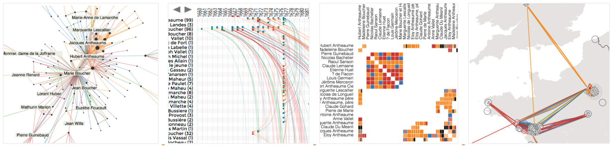

Benjamin Bach, PhD, HDR
Research Scientist
Inria, France
Bivwac team
200 Av. de la vieille Tour
33400 Talence, France
benjamin.bach@inria.fr
Google Scholar
LinkedIn
OrcID: 0000-0002-9201-7744
Full CV
Research & Bio
Publications
Teaching
Network Visualization
The group’s work on visualizaing networks includes developing The Vistorian, an Interactive Visualizations for Dynamic and Multivariate Networks. Free, online, and open source. For more information, see vistorian.net.
People involved
- Benjamin Bach
- James Scott-Brown
- Sarah Schöttler
- Mashael AlKadi
Publications

Understanding Barriers to Network Exploration with Visualization: A Report from the Trenches Mashael AlKadi, James Scott-Brown, Vanessa Serrano, Jean-Daniel Fekete, Catherine Plaisant, Uta Hinrichs, Benjamin Bach. IEEE Transactions on Visualization and Computer Graphics (TVCG, IEEE VIS, 2021) (2023) [PAPER] [WEB] [VIDEO]


DataToon: Drawing Data Comics About Dynamic Networks with Pen + Touch Interaction Nam Wook Kim, Nathalie Henry Riche, Benjamin Bach, Guanpeng Xu, Matthew Brehmer, Ken Hinckley, Michel Pahud, Haijun Xia, Michael J. McGuffin, Hanspeter Pfister. ACM Conference on Human Factors in Computing Systems (CHI) (2019) [PAPER] [WEB] [VIDEO]